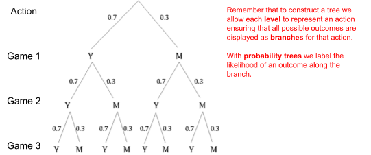
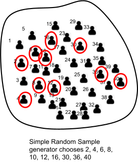
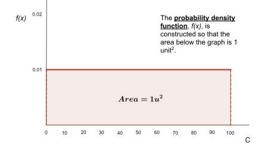
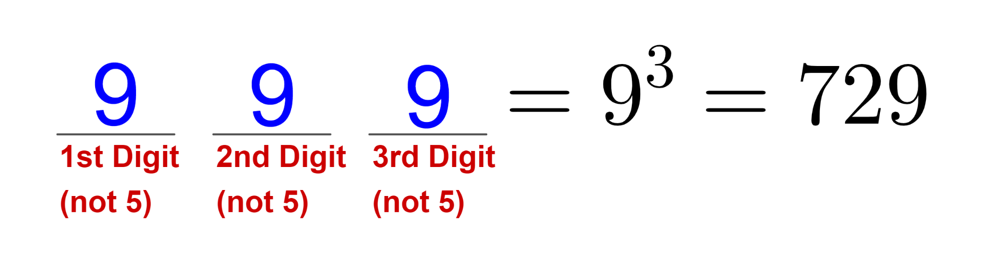

B.O.B. “Back of the Book”
main_section
BOB has the answers.
Senior Woodlands Student circa 2002
UNIT 1:
title_section
Practice 1.1
- 12
- b) 3 c) 5
- b) 18 c) 48
- 19 200 000
- 28 125
- a) 1024 b) 324
- 960
- a) 3136 b) 324
Practice 1.2
- 118
- a) 216 b) 120 c) 60 d) 91
- 205 506
- 479 001 599
- 3450
- 1536
- 976
- up to 6 pulses
- HINT: Don’t overthink this! Reflect on what addition really means.
- HINT: Reflect on what subtraction really means.
- HINT: It is instructive to actually try out this game with three pegs on each side and observe how the game works, then attempt to translate this process as a series of decisions.
Practice 1.3
- 6
- 3
- Low 21; High 33
- 11
- HINT: Use the same reasoning that was used in developing the two set scenario; ensuring to keep track of regions of intersection that are overcounted.
- a) 84 b) 20
- 98
- HINT: Using a Venn diagram set variables for each “slice” and algebraically work with the resulting system.
- HINT: A pattern can be established that follows from the 2-set and 3-set cases.
Practice 1.4
- a) 3024 b) 220 c) 18! d) n! e)
- a) 120 b) 360
- 840
- a) 1440 b) 1224
- a) 7 b) 4 c) 8
- 480
- HINT: Express y and z in terms of x.
- 557
Practice 1.5
- 241 920
- a) 3 386 880 b) 1 814 400 c) 120 960
- 2 903 040
- 12
Practice 1.6
- 5040
- 10
- 20
- 360
- 56
- a) 1440 b) 211 680
- 210
- 2510
- HINT: Mimic the solution of the example preceding the theorem’s statement.
- 630
Practice 1.7
- 2 598 960
- a) 369 600 b) 302 400
- 3744
- 330
- 300
- a) 1 b) Proof c) Proof (HINT: Consider selecting versus not selecting.)
- HINT: This process overcounts; see if you can produce repetitious outcomes or outcomes that are invalid.
- a) 1 905 904 000 b) 168 168 000
- 12
- HINT: Focus on selecting the distinct objects, then identical.
Practice 1.8
- 959
- 24
- 26
- a) 12 b) 16 c) 19
- 47
- Hint: In each part use the preceding example as an approach to generalize from.
- Hint: Consider developing equivalent collections which collapse to Theorem 1.8.2. Alternatively, consider identifying how one could break the situation up into cases.
Practice 1.9
- 66
- a) 561 b) 272
- 1 093 750
- 15 120
- 2400
- 29 400
Practice 1.10
- 176
- 256
- 63
- 252
- HINT(S): These all stem from theorems encountered earlier in the chapter.
- 42
- HINT: Consider how the distributive property for algebra works and also consider writing out the n brackets in expanded form.
- HINT(S): Use the previous properties to algebraically prove these ones.
- Conjectures and Proofs will vary.
Practice 1.11 (Challenge Task)
- 51 240
- HINT: if n = 18 there would be 3060 intersections; if n = 18 there would be 8855 intersections.
- 5005
- 39 180
- 7143
- 8
- 1920
- 683
UNIT 2:
title_section
Practice 2.1
- a)
 b) c)
b) c) - a) b)
- 0.00137
- 0.273

- 0.4114
- 10
- Each die has six outcomes which can be achieved independently from each other.
Practice 2.2
- 0.07
- 0.87
- 0.06

- 0.15
- , you figure out the rest!
Practice 2.3
- 0.35
- 0.0045
- 0.002
Practice 2.4
- a)
 b) 0.64
b) 0.64 - b)
- 0.63
- W = 75; V = 225
- 67.8%
- 0.449
- 0.3105 (if Cheng shoots at Jim first); 0.6326 (if Cheng shoots at the ground first)
- HINT: Consider the theme of this section.
Practice 2.5
- 22.5%
- Hint: Draw out the original probability tree.

- Proof
- Box 1, ; Box 2, ; Box 3,
- a) b) c)

Practice 2.6
Simulations should be within 0.01 if done properly; proper design and enough trials.
- 0.77
- 0.4
- 0.04
- 0.167
- 0.52
- Switch the choice; probability of winning.
Practice 2.7
- a) X is the time taken in minutes. b) c) 4.02
- a) b) 2.2
- $0.0077
- a) -0.22 b) 22
- At least $6.50
- Lose $5.33
- -$1.33
- 1.994 m2
- Contest rules and prizes vary from year to year.
Practice 2.8
- a) 0.0009 b) 0.776
- 0.64
- a) 0.1514 b) 26
- a) 0.00313 b)
c) Hint: Extend part b with an undefined number of outcomes.
- Hint: Solve for .
- 13%
- $1.50
- Hint: Try to create a spreadsheet simulation that allows you to change the n and p parameters with the graph shown.
- Hint: Use the original definition for expectation to generate a sum in which we can factor out the expression ‘np’ from each term.
Practice 2.9
- 0.27
- 365
- 0.39
- Hint: Follow the same type of reasoning used to develop the formulae for the first definition.
- 14.7
- Hint: Write out the infinite series and modify the geometric series formula.
Practice 2.10
- a) 0.26 b) 0.948 c) 2
- 0.12
- 0.053
- 0.026
- 0.46
- a) 0.56 b) c) 21.2
- Hint: Modify version 2 of the hyper-geometric probability formula to adjust for the third type of object.
- Hint: You may need to research hyper-geometric series to help with this proof.
Practice 2.11
- As the likelihood of a single outcome is usually quite small, it is more reasonable to measure the probability of a range of outcomes to properly test the significance of the result.
- p-value = 0.0022; reject the null hypothesis
- p-value = 0.0563; accept the null hypothesis
- p-value = 0.000641; reject the null hypothesis
- p-value = 0.005; reject null hypothesis
UNIT 3:
title_section
Practice 3.1
The case studies examined in this section will yield varied proposals for variables, indices, and procedures. Ensure that each is thought through according to the considerations laid out in the readings of this section and seek out feedback from your instructor regarding the validity and practicality of the proposals.
Practice 3.2
The case studies examined in this section will yield varied sampling strategies. Ensure that each is thought through according to the considerations laid out in the readings of this section and seek out feedback from your instructor regarding the validity and practicality of the proposals.
Practice 3.3
- Mean: ; Median = 51 ; Mode = 2, 48, 52, 80, 86
- Answers will vary depending upon the grouping method.
- Mean: Median = 149.5; Mode = 149.5
- HINT: Look at the chart for comparing differing measures of central tendency.
Practice 3.4
- Mean Deviation = 23.9, Variance , Standard Deviation
- Mean Deviation = 7.4, Variance , Standard Deviation
- 23 data within 1 std dev; 30 data within 2 std dev; 30 data within 3 std dev; Yes, this confirms Chebyshev’s Theorem
- Approximately 100 minutes.
- a) , b) SLI scores have less error and are more consistent than YND data
- a) b) c) d) Don’t be lazy, it’s obvious!
e) Hint: First determine the mean of the set, when each datum is increased by a constant, then algebraically work through the formula for standard deviations.
- b) Mean of z-scores is 0, standard deviation is 1
c) HINT: Consider the nature of the mean and why we must take the squares of deviations when calculating spread.

Practice 3.5
- Threatening: Median = 1.65, IQR = 0.4
Non-Threatening; Median = 2.1, IQR = 0.2

- Male: Median = 17, IQR = 15
Female: Median = 12, IQR = 2.5
Non-Identified: Inconclusive, too few data points
Practice 3.6
- Math v Poverty Level: r = -0.82 Strong Negative Correlation

Reading v Poverty Level: r = -0.894 Strong Negative Correlation
- r = 0.41 ; Moderate Correlation, little evidence showing such a relationship exists.
- HINT: Observe the formula and think about what happens if the relationship is perfectly linear.
- a) r = 0 ; perfect randomness b) HINT: Think of the purpose of measuring the correlation.
Practice 3.7
- a) Answers will vary; Hint: Consider social, cultural ramifications of sampling unmarried females.
b) r = -0.865; Strong Negative Correlation
c) ; F(87) = 1.98, meaning approximately 2 children which overestimates the 2019 fertility rate in Canada of 1.5.
- a) r = -0.924; Strong Negative Correlation
b) slope = -0.0528; Impurity decreases by 0.05 per degree celsius/Kelvin, Intercept = -13.5 which means at 0 oC there would be negative 1350 % impurity, so this result would be an ineffective prediction. It’s perhaps better to convert into Kelvin.
- a) r = 0.9998; Strong Positive Correlation
b)
c) When t = 30 (year 2020) P = 333.4; meaning the model predicts a global population of 331 million; close to the actual amount of 328 million!!
Practice 3.8
- a. Logarithmic (R2 = 0.894); Polynomial (R2 = 0.982); Linear (R2 = 0.893)
b. Choose Logarithmic even though R2 is least as long term functional behaviour is better.
c. Answers will vary depending upon the model chosen. E.g. Logarithmic 9 million sales, Polynomial shows negative sales.
- a. Exponential (R2 = 0.997); Polynomial (R2 = 0.963)
b. Exponential is the best fit, both in terms of R2 and predictive behaviour.
c. Predicts a relative risk of 3.67 for a blood alcohol level of 0.08.
- a. Polynomial (R2 = 0.53); all others have R2 below 0.2
b. Polynomial (degree-2) is the best; could also consider eliminating the outlier, but this has little effect.
c. Start Up Cost is predicted to be $1.77 million
Practice 3.9
- a. b. 0.025 c. 0.2
- a. 0.1173 b. 0.2499
- HINT: Integrate the density function from 0 to
 ; if you know how this is done...integration is the “inverse” process to differentiation.
; if you know how this is done...integration is the “inverse” process to differentiation. - HINT: Integrate the density function from 0 to x.
Practice 3.10
- a) 0.8051 b) 0.0694 c) 0.8240 d) (-38.7, -24.3)
- a) 0.9032 b) 0.0136 c) (100.1, 114.7)
- a) $0.11/bag, or $48269/year (calculated on spreadsheet), $45000/year (from z-score chart) b) $0.01/bag, or $4500/year
- a) 64% b) 82%
- or
Practice 3.11
-
Confidence Level | Z-Score () |
90% | 1.645 |
95% | 1.96 |
99% | 2.576 |

- Women: (268, 326) Men: (188, 232) ; Statistically significant difference
- 2-3 samples were taken?? Not a very good study!
- HINT: Convert the sampling standard deviation,
 in the confidence interval, and also consider what the length of the interval would measure to be.
in the confidence interval, and also consider what the length of the interval would measure to be.
Practice 3.12
- a) b) c)
 d)
d) - 0.9997
- 0.705
- 0.3121
- HINT: Observe the full shape of the “wave” when the conditions aren’t met.
Practice 3.13
- They are still in a statistical dead-heat...just barely.
- Approximately 841 subjects.
- HINT: Set the desired interval range equal to the “
 ” portion of the confidence interval.
” portion of the confidence interval.
Practice 3.14
- a) p-value = 0.0000002866515719; reject H0
b) p-value = 0; reject H0
c) p-value = 0.1459; accept H0
- a) p-value = 0; reject H0
b) p-value = 1; accept H0
c) p-value = 0; reject H0
- p-value = 0; reject H0
- a) p-value = 0.011; reject H0
b) p-value = 0; reject H0
- p-value = 0.46; accept H0
- p-value = 0; reject H0
Practice 3.15
These are open-ended case studies where raw data is provided. Ensure to utilize the methods discussed in the text to properly analyze and interpret the particular breakdown that you’re examining.